00:08嗨，今天非常高兴能请到我的老朋友，李飞飞教授。
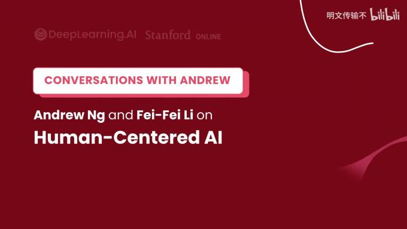
00:13飞飞是斯坦福大学的计算机科学教授，同时也是以人为本人工智能研究所的联合主任。
00:22在此之前，她还曾担任谷歌云的首席科学家，负责该部门的人工智能相关工作。
00:29飞飞，很高兴你能来。
00:34非常开心能来这里。
00:36说起来，我们认识多久了？
00:43在我们见面之前，我就已经了解你的工作了。
00:47我是二零零九年到的斯坦福，但我们从二零零七年就开始交流了，所以有十五年了。
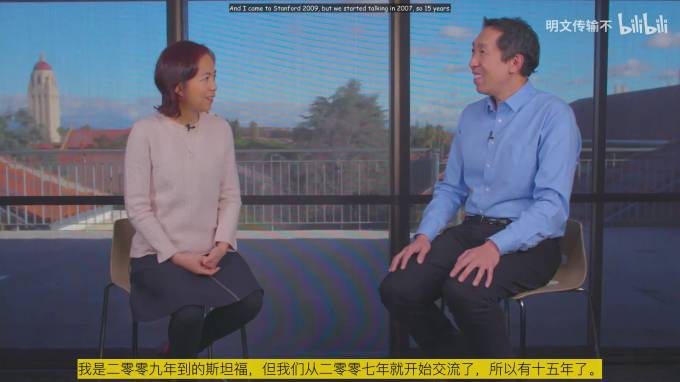
00:57我至今仍清晰记得，当时我们一群人，包括我、Chris Manning，大家一起想办法把你招进斯坦福，压，同人力有多大。
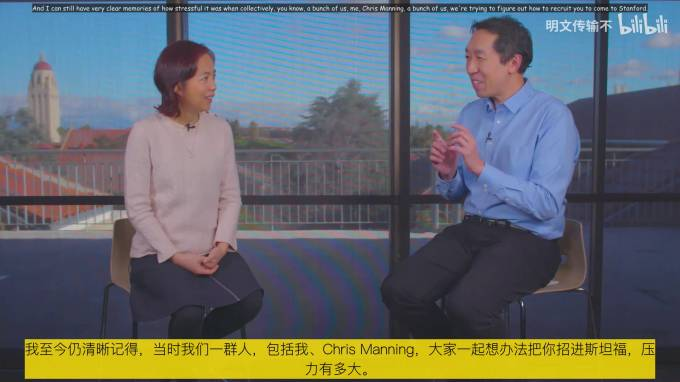
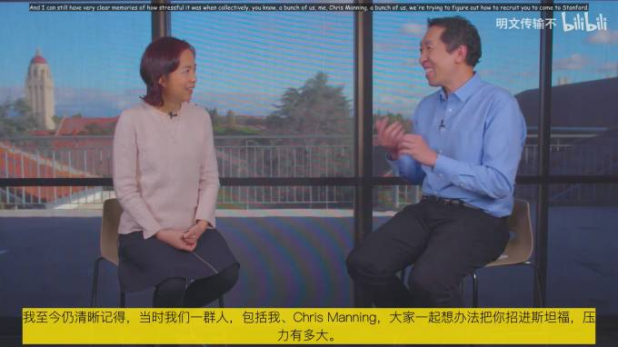
01:11我只是需要安排好我学生时期的生活，但斯坦福的吸引力确实难以抗拒。
01:19能有你这样的朋友和同事在这里，真是太好了。
01:26这么多年过去了，我们很幸运能成为见证人工智能巨大发展的这一代人。
01:33好的，你的背景中有一点我一直觉得备受启发：如今，各行各业的人都在进入人工智能领域。
01:42有时人们仍然会想，我主修的是某个别的专业。
01:50我觉得你背景中最有趣的一点是，你最初学的并不是计算机科学或人工智能，而是物理学，然后才走上了成为全球知名人工智能科学家的道路。
02:04那么，你是如何从物理学转向人工智能的呢？
02:09嗯，这是个好问题，Andrew，特别是我们俩都对年轻人的未来充满热情，希望他们进入人工智能的。
02:21事实是，如果我在二十多年前都能进入人工智能领域，那么今天任何人都可以，因为人工智能已经变得如此普及，并具有全球影响力。
02:36但我自己嘛，或许是个意外。
02:40我一直是个热爱物理的孩子，或者说是个理工科孩子。
02:48但物理学一直是我的热爱，贯穿了初中、高中和大学。
02:54我进入普林斯顿大学，主修物理学。
03:07物理学教会我的一件事，直到今天仍然受用，那就是对提出重大问题的热情，对追寻北极星般的指引的热情。
03:09作为普林斯顿的物理系学生，我过得非常愉快。
03:14我做的其中一件事，就是阅读二十世纪伟大物理学家的故事和著作。
03:22去了解他们对世界的看法，尤其是像 Albert、Roger Penrose、Erwin 这样的人。
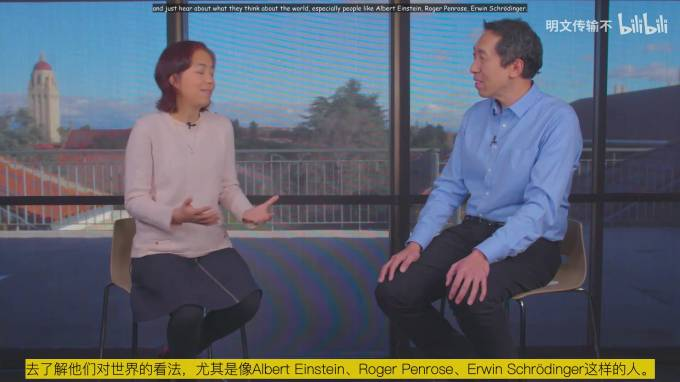
03:33很有意思的是，这些伟大物理学家在职业生涯后半段的许多著作，并不仅仅是关于原子世界或物理。
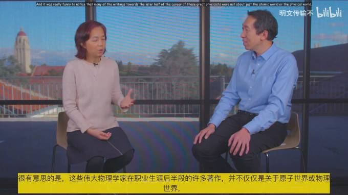
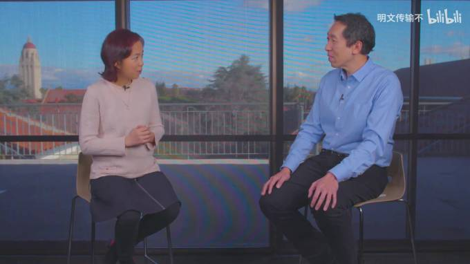
03:48而是思考同样大胆的问题，比如生命、智能、人类状况。
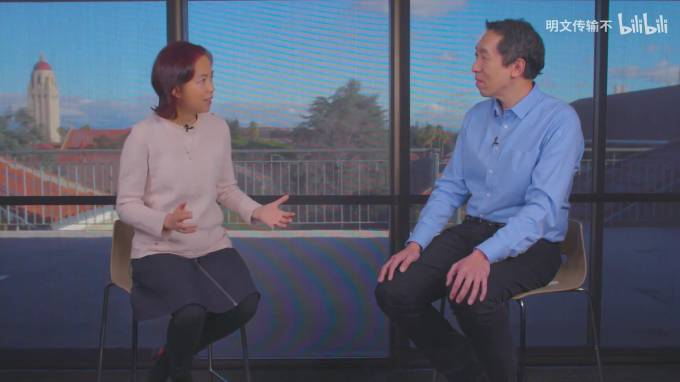
03:59你知道，写过一本书叫《生命是什么？
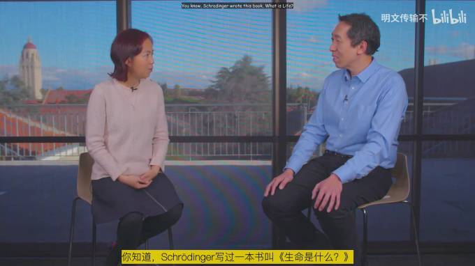
04:04Roger Penrose 写过一本书叫《皇帝的新脑》，对吧？
04:11这真的让我对智能这个话题产生了极大的好奇。
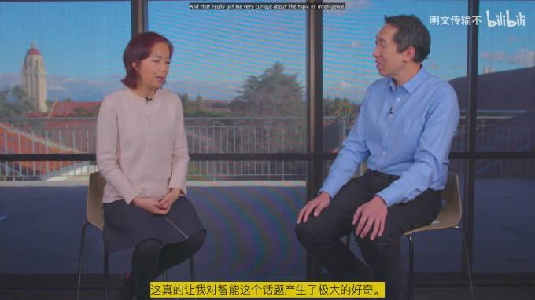
04:16所以在大学期间，就自然而然地一步步发展下去。
04:21我在几个神经科学实验室实习过，尤其是与视觉相关的。
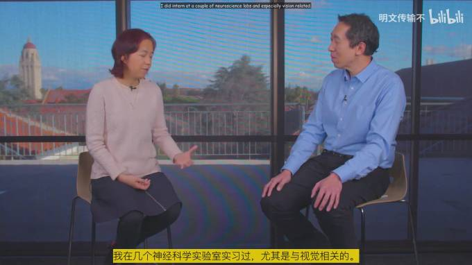
04:29我当时就觉得，哇，这个问题就像问宇宙的起源或物质由什么构成一样大胆。
04:40这让我从物理学本科学位转向了人工智能的研究生学位，尽管，不知道你是否有同感，在我们那个时代，人工智能这个词名声不佳。一量。
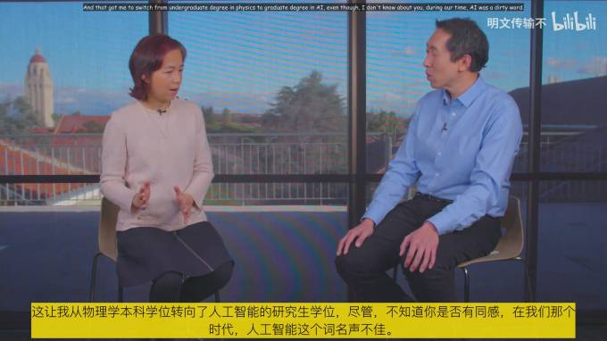
04:54当时是人工智能的冬天，所以与其说是计算神经科学，不如说是机器学习和计算机视觉。
05:05老实说，我觉得我读本科的时候，忙着写代码。
05:10我就那么愉快地忽略了人工智能寒冬，继续写我的代码。
05:15是啊，我当时忙着解偏微分方程呢。
05:21嘿，那么，你现在心中有大问题吗？
05:25有，我的大问题仍然是智能。
05:29我认为自以来，人类还没有完全理解智能背后的基本计算原理。
05:42你知道，今天我们使用人工智能这个词，使用通用人工智能这个词，但归根结底，我仍然梦想着能用一组简单的方程或简单的原理来定义智能的过程，无论是动物智能还是机器智能。
06:05这类似于物理学。
06:07例如，很多人拿飞行来做类比，对吧？
06:11我们是在模仿鸟类飞行，还是在建造飞机？
06:17很多人会问人工智能和大脑之间的关系问题。
06:22对我来说，无论我们是在制造一只鸟，复制一只鸟，还是在制造一架飞机，最终决定飞行过程的是空气动力学和物理学。
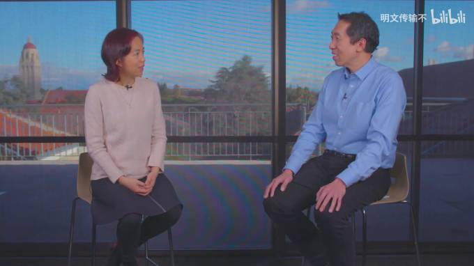
06:36我坚信总有一天我们会发现这个原理。
06:40我有时会思考这个单一学习算法的假说。
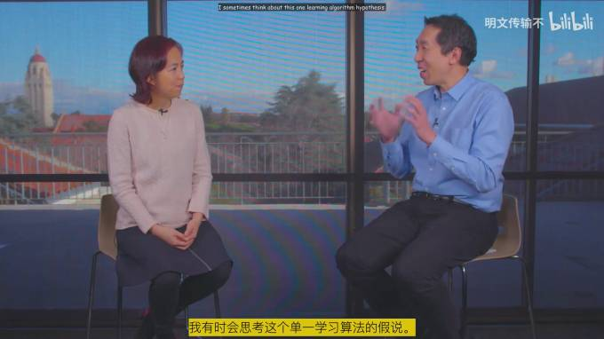
06:44很多智能，也许不是全部，但很多，能否由一个或非常简单的机器学习原理解释。
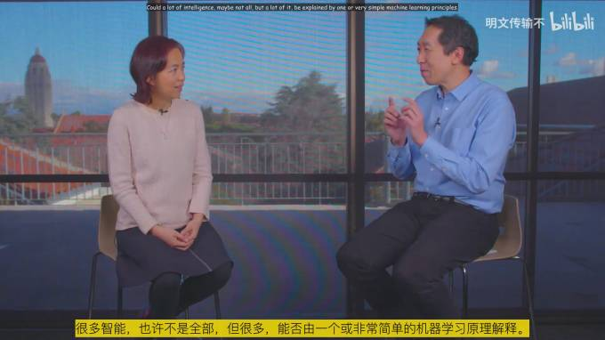
06:53感觉我们离攻克这个难题还有很长的路要走，但在周末有空的时候，当我思考学习算法及其发展方向时，这仍然是我一想到就会兴奋的事情之一。—。
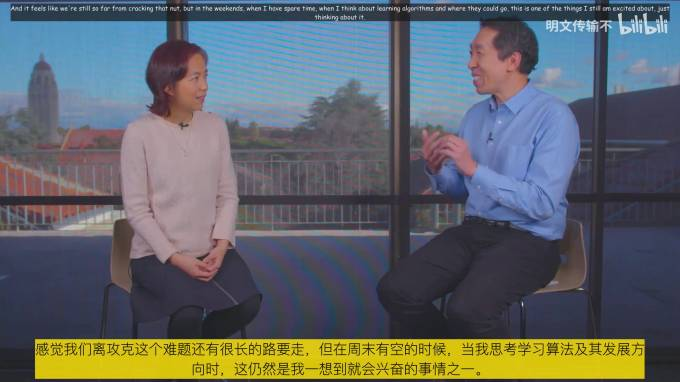
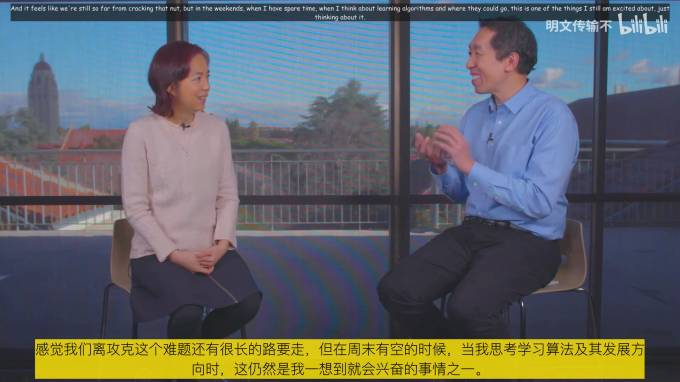
07:07我完全同意。
07:09如果用物理学来类比，我感觉我们仍处于前牛顿时代。
07:15在牛顿之前，已经有伟大的物理学、伟大的物理学家、大量的现象学研究，以及关于天体如何运动等等的研究。
07:27但正是牛顿开始写下那些非常简单的定律。
07:31我认为，作为一门基础科学，人工智能仍在经历那个非常激动人心的成熟过程。
07:40在我看来，我们还处于前牛顿时代。
07:44听到你谈论，尽管机器学习和人工智能已经取得了如此大的进步，但感觉仍然有更多未解的问题，还有更多的工作一一也许比已经完成的工作还要多一一需要今天进入这个领域的某些人去完成，这真的很棒。
08:04我的息总是，我们来算一下。
08:09这是一个非常年轻的领域。
08:12现代物理学、化学和生物学都有几百年的历史了，对吧？
08:18所以，我认为今天进入智能科学领域并研究人工智能是非常令人兴奋的。
08:30是啊，确实如此。
08:33我记得曾与已故的 John McCarthy 教授聊过，是他创造了“人工智能”这个词。
08:40哎呀，从他当年在研讨会上构想并创造出“人工智能”这个术语以来，这个领域已经发生了翻天覆地的变化。
08:51也许再过十年，也许正在观看这个视频的某个人会提出一套新的想法，然后他们会说，哎呀，人工，一智能的发展和你我当初想的大不一样了。
09:04那将是一个令人兴奋的未来，值得我们共同努力去创造。
09:10是啊，我敢肯定牛顿当年也未曾预见到爱因斯坦。
09:25所以，我们科学的演进有时会大步迈进，有时则需要一段时间，我认为我们现在正处于人工智能一一个令人激动万分的阶段。
09:29你知道吗，听你描绘人工智能的宏伟愿景很有意思。
09:35稍微回顾一下，你背景中还有一点我觉得很受启发，那就是在你刚开始的时候，我听你说过你不仅一是个物理系学生。
09:49同时，你还经营着一家洗衣店来支付学费。
09:53跟我们多聊聊那方面的事情吧。
09:59我十五岁时来到这个国家，美国，实际上是新泽西州。
10:05住在新泽西的一个好处是离普林斯顿很近。
10:10所以我经常在周末和父母一起去那里，瞻仰爱因斯坦度过他职业生涯后半生的地方。
10:21但是，你知道，典型的移民生活是很艰难的。
10:26到我进入普林斯顿的时候，我的父母不会说英语。
10:31事情就这样一环扣一环。
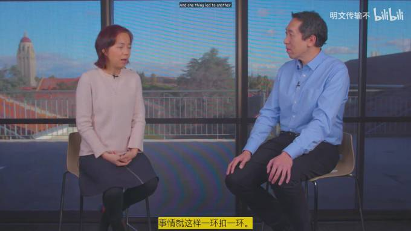
10:34结果发现，经营一家干洗店对我家来说可能是最好的选择，尤其是我来打理这个生意，因为它是个人周末生意。
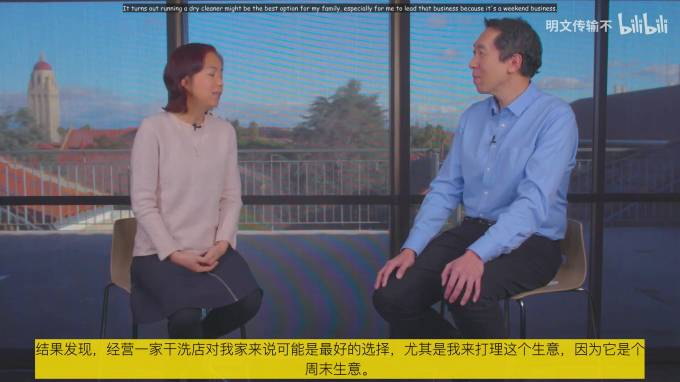
10:45如果是工作日的生意，我很难兼顾学业。
10:49信不信由你，经营干洗店其实非常依赖机器，这对我这样的理工科学生有好处。
11:00所以我们决定在新泽西州一个叫的小镇开一家干洗店。
11:08结果我们发现，那里离贝尔实验室，以及许多早期卷积神经网络研究发生的地方，物理距离并不远，但我当时完全不知道。
11:22我实际上在 AT&T 贝尔实验室做暑期实习生。
11:27对，和 Rob Shapire 一起。
11:30和 Michael Kearns 一起，他是我的导师，还有 Rob Shapire，他是布鲁斯·辛格伟大算法的发明者之一。
11:40看，你在写代码搞 A，而我在努力洗衣服。
11:50直到很久以后，我才开始实习。
11:54是啊，然后持续了七年。
11:58整个本科和大部分研究生阶段我都在做这个，我还雇佣了我的父母。
12:06是的，这真的很鼓舞人心。
12:09我觉得，你一生都在出色地做着激动人心的工作，而一个经营洗衣店的人成长为全球杰出的计算机科学家的故事，我希望它能激励正在观看这个视频的一些人，无论你身处何方，每个人都有足够空间去接触人工智能。
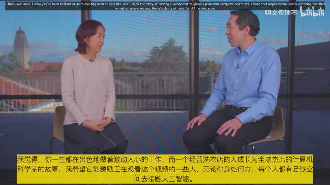
12:25我觉得，你一生都在出色地做着激动人心的工作，而一个经营洗衣店的人成长为全球杰出的计算机科学家的故事，我希望它能激励正在观看这个视频的一些人，无论你身处何方，每个人都有足够空间去接触人工智能。
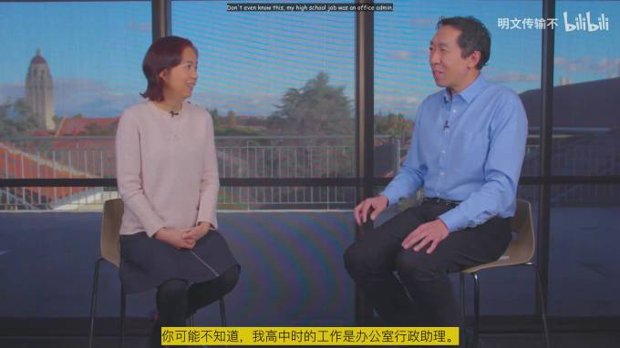
12:30你可能不知道，我高中时的工作是办公室行政助理。
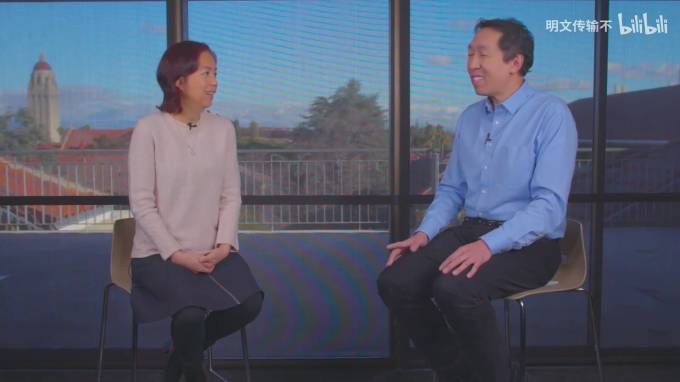
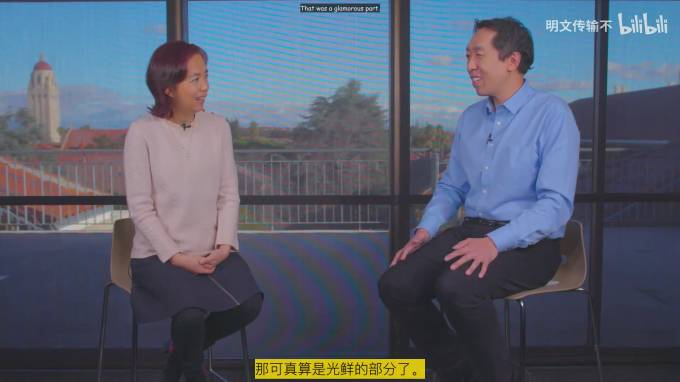
12:36直到今天，我还记得自己做了大量的复印工作。
12:40最令人兴奋的部分是用碎纸机。
12:43那可真算是光鲜的部分了。
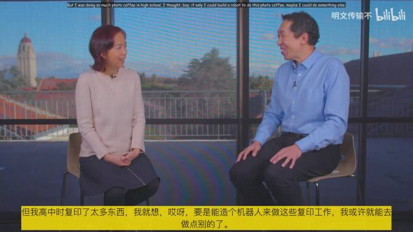
12:46但我高中时复印了太多东西，我就想，哎呀，要是能造个机器人来做这些复印工作，我或许就能去做点别的了。
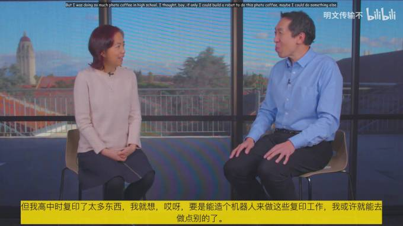
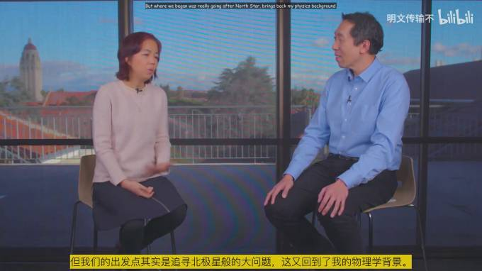
12:58你成功了吗?。
13:00还在努力中。
13:05当人们想到你和你所做的工作时，大家都会想到的一个巨大成功就是，它建立了计算机视觉早期的基准。
13:18它确实对现代深度学习和计算机视觉的崛起起到了至关重要的作用。
13:24我敢打赌，没多少人知道你是如何开始做的。
13:30那就给我们讲讲的起源故事吧。
13:35好的，Andrew，这个问题问得好，因为很多人以为仅仅是给大量图像打标签。
13:44但我们的出发点其实是追寻北极星般的大问题，这又回到了我的物理学背景。
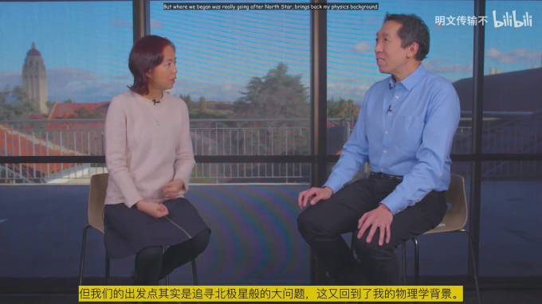
13:50当我进入研究生院时，你是哪年进入研究生院的？
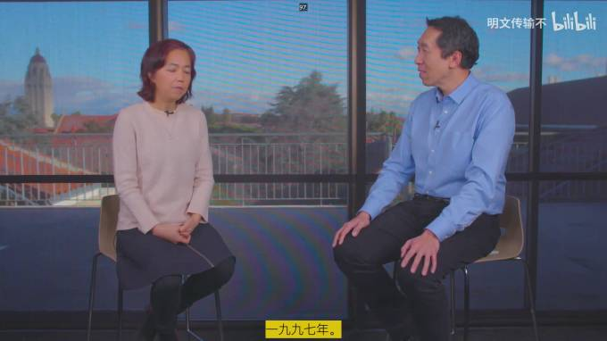
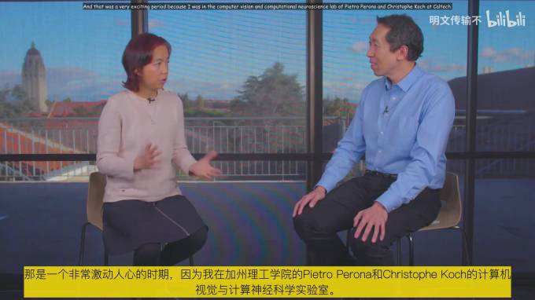
13:57好的，我比你晚三年，两千年。
14:01那是一个非常激动人心的时期，因为我在加州理工学院的 Pietro Perona 和 Koch 的计算机视觉与计算神经科学实验室。
14:13在此之前，有两件事非常令人兴奋。
14:18第一，当时的人工智能领域，那时候还不叫人工智能，无论是计算机视觉还是自然语言处理，都找到了它们的通用语言，机器学习、统计建模作为一种新工具已经出现，对吧？
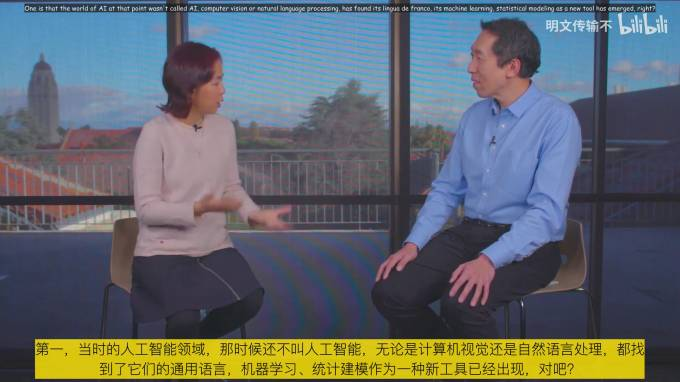
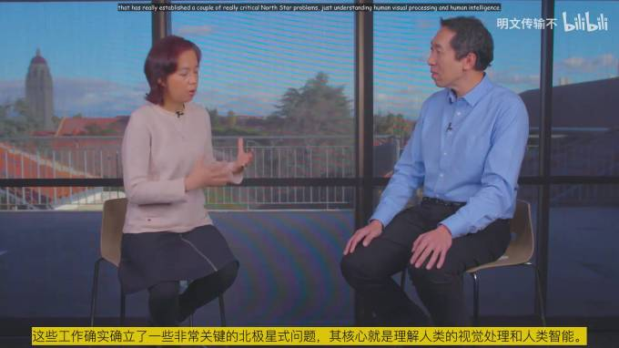
14:35它其实已经存在一段时间了。
14:39我记得当时把机器学习应用到计算机视觉这个想法，还是件有争议的事情。
14:46没错，而我是第一代拥抱所有基础网络、所有推理算法等等的研究生。
14:55这算是第一件激动人心的事。
14:59第二件大多数人不知道也不了解的事是，过去几十年，可能二三十年，在视觉领域，人类视觉领域，涌现了大量令人难以置信的认知科学和认知神经科学的工作，这些工作确实确立了一些非常关键的北极星式问题，其核心就是理解人类的视觉处理和人类智能。
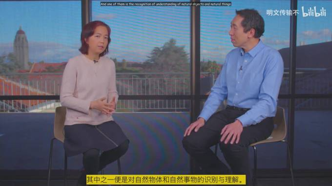
15:28其中之一便是对自然物体和自然事物的识别与理解。
15:35因为许多心理学和认知科学的研究都指出，这是人类智能中一种天生优化的功能或能力。
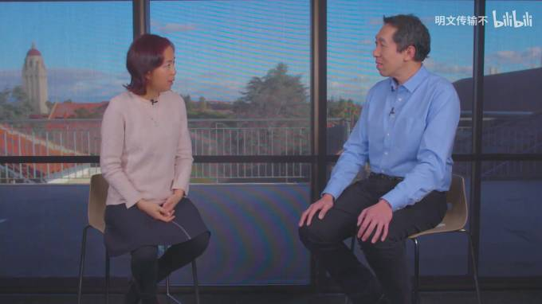
15:51它比我们想象的更稳健、更快速、更精妙。
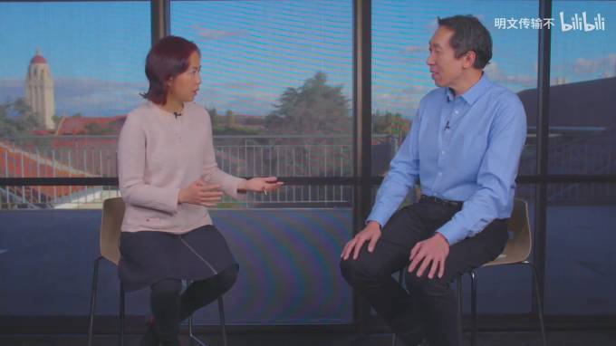
16:00我们甚至找到了神经关联，即大脑中专门负责处理面孔、场景或身体部位的脑区。
16:09这两件事促使我在博士期间专注于使用机器学习方法来处理现实世界中的物体识别问题。
16:20但很快，问题就变得非常棘手，我们撞上了人工智能和机器学习领域最重大、并且持续至今的挑战，之一，那就是缺乏泛化能力。
16:40你知道吗，你可以随心所欲地设计一个漂亮的模型，但如果模型过拟合了，那也没用。
16:49我记得过去发表计算机视觉论文是可能的，只要在一张图上有效就行。
16:57是的，就是因为过拟合，模型表达力不强，而且我们缺乏数据。
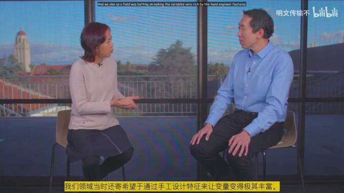
17:06我们领域当时还寄希望于通过手工设计特征来让变量变得极其丰富。
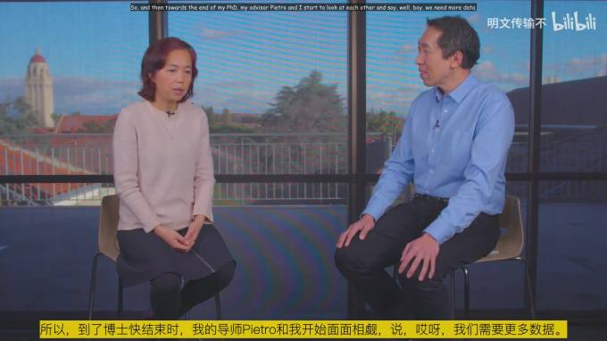
17:15记得吗，每个变量都承载着大量的语义信息，但用的是手工设计的特征。
17:23所以，到了博士快结束时，我的导师 Pietro 和我开始面面相觑，说，哎呀，我们需要更多数据。
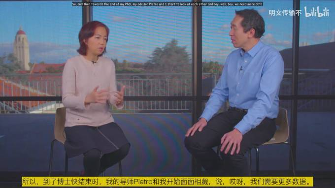
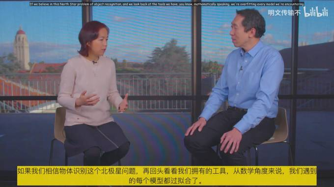
17:34如果我们相信物体识别这个北极星问题，再回头看看我们拥有的工具，从数学角度来说，我们遇到，一的每个模型都过拟合了。
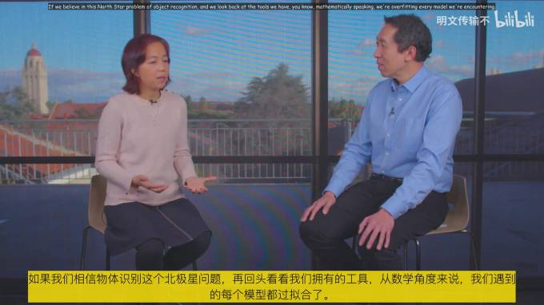
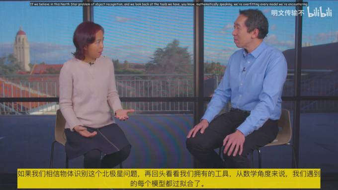
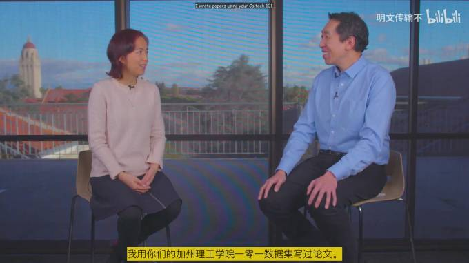
17:47我们需要重新审视这个问题。
17:50就这样，事情一步步发展下去。
17:54他和我决定，我们干脆做一个，当时我们认为是一个大规模的数据项目，叫做加州理工学院一零一数据集。
18:06我用你们的加州理工学院一零一数据集写过论文。
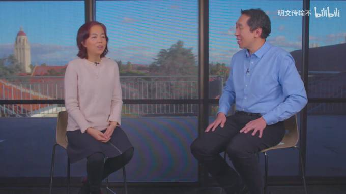
18:11是的，你和你的早期研究生。
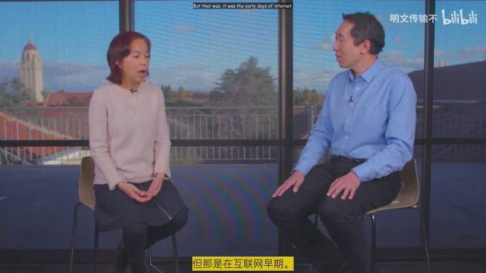
18:18加州理工学院一零一数据集。
18:22对，那是我和我妈妈一起标注图像。
18:26哦，还有几个本科生。
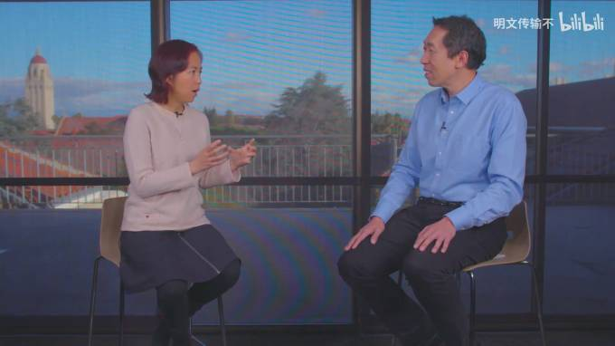
18:32所以数据的突然可用是件新鲜事。
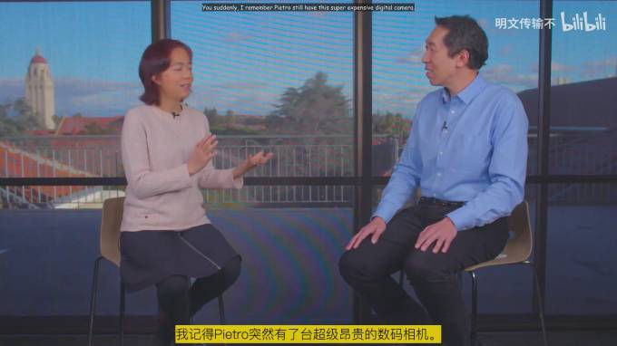
18:36我记得 Pietro 突然有了台超级昂贵的数码相机。
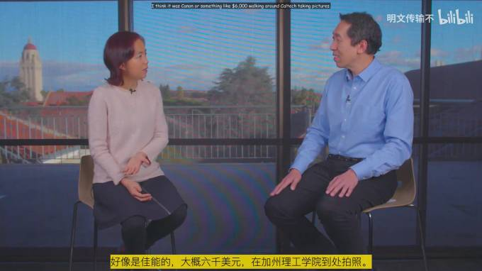
18:42好像是佳能的，大概六千美元，在加州理工学院到处拍照。
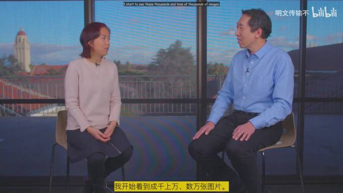
18:55我开始看到成千上万、数万张图片。
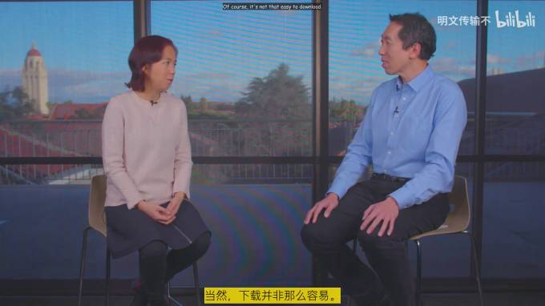
18:59我就告诉 Pietro，我们直接下载吧。
19:03当然，下载并非那么容易。
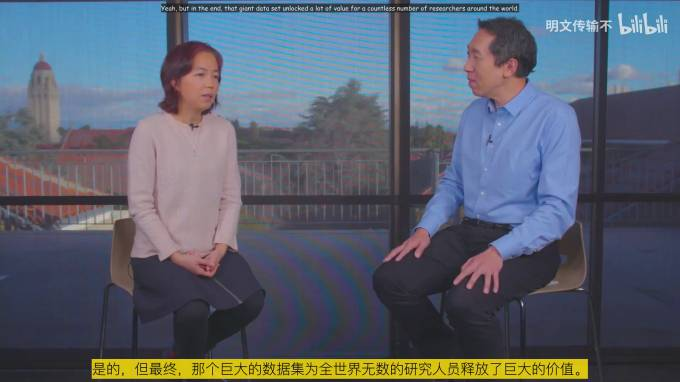
19:05争情瓶达件少少及展。
19:06事情就这样一少少发展。
19:08我们构建了这个加州理工学院一零一数据集，包含一百零一个物体类别，大概，我想想，三万张图片，每类大约三十到五十张。
19:22我觉得很有趣的是，尽管现在大家都听说过，你也是经过了几次迭代，做了加州理工学院一零一，并且取得了成功。
19:37但正是从构建加州理工学院一零一数据集中获得的早期经验，为你构建后来更成功的项目奠定了基础。
19:47没错，只不过当我们开始着手时，我已经成为助理教授了，我们开始审视这个问题，意识到它远比我们想象的要宏大。
20:01仅从数学角度讲，加州理工学院一零一不足以驱动算法。我们决定做，那时大家开始觉得我们做得太过火了。
20:18这想法太疯狂了。
20:19下载整个互联网上的图像，并映射出所有英语名词，这个想法有点……。
20:29我开始遭到很多反对。
20:31我记得在某个计算机视觉与模式识别会议上，当我提出关于图像数据的早期想法时，有几个研究人员公开质疑说，如果你连一个物体类别都识别不了，比如你坐的那把椅子，你又怎么能想象，或者说，一个包含两万两千个类别、一千五百万张图像的数据集有什么用呢？
20:59是的，但最终，那个巨大的数据集为全世界无数的研究人员释放了巨大的价值。
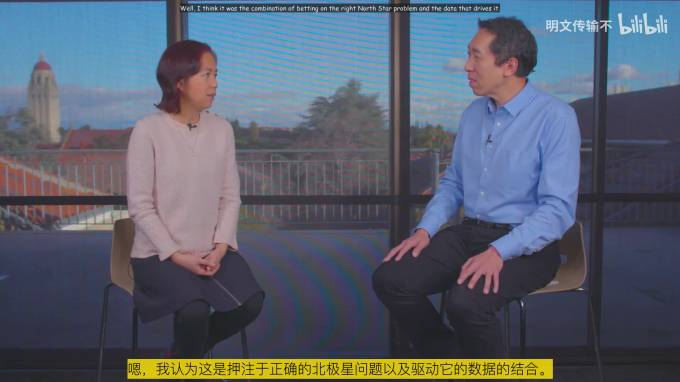
21:10嗯，我认为这是押注于正确的北极星问题以及驱动它的数据的结合。
21:19所以那是一十有趣的过程。
21:22是的，对我来说，这个故事给我的一点启发是，有时候人们觉得应该只做那些一开始就非常宏大的项目。
21:39但我认为，对于刚开始搞机器学习的人来说，如果你的第一个项目规模小一点，也完全没问题。
21:47取得一个好的小成功，利用学到的经验去构建更大的东西，然后有时你就能获得一个像那量样的大胜利。
21:58是的，但与此同时，我认为被一个雄心勃勃的目标所驱动也很重要。
22:08你可以把问题或项目的规模设定为这条道路上的阶段性里程碑。
22:16但我也看到我们当前的一些学生，他们受到当今这个不停发表论文的环境所带来的同辈压力，为了发表而发表，导致论文越来越趋于渐进式。
22:34我个人总是督促我的学生去问自己一个问题：驱动你的那颗北极星是什么？
22:45就我自己而言，这些年来做研究，我基本上都是做我感兴趣的事情，做我想努力推动领域向前发展的事情。
22:54这不意味着不听取别人的意见。
22:57必须听取别人的意见，让他们的意见塑造你的观点。
23:02但最终，我认为最好的研究是让世界塑造他们的意见，但最终要用你自己的观点来推动事物前进。
23:14是的，关键在于你内心的火焰，对吧？
23:19那么，随着你研究项目的发展，你开始将你在计算机视觉和神经科学方面的基础应用到各种主题上—，包括你非常关注的医疗健康，以及神经科学应用。
23:33我想多听听这方面的故事。
23:38我认为我的计算机视觉研究演进也某种程度上遵循了动物视觉智能的演进路径。
23:50一是什么才是真正能帮助人类生活、具有影响力的应用领域，这就是医疗健康方面的工作。
24:00另一个是视觉归根结底是什么？
24:06这促使我尝试闭合感知与机器人学习之间的循环。
24:13所以，在医疗健康方面,。
24:17你知道，Andrew，大约十年前，当我遇到我在斯坦福医学院的长期合作者 Arnie 医生时，有人一个数字震惊了我。
24:30那就是每年约有二十五万美国人死于医疗差错。
24:38我之前从未想到医疗差错导致的死亡数字会如此之高。
24:45原因有很多，但我们可以确信，大多数原因都不是故意的。
24:53这些都是非故意的错误等等。
24:59举例来说，这个数字令人难以置信。
25:02每年大约有四万人死于车祸，这已经是完全的悲剧了，而这个数字甚至还要大得多。
25:14举一个例子，在这个令人难以置信的数字中，有一个数字是，因院内感染导致的死亡人数超过九万。
25:27这比，这是车祸死亡人数的二点五倍。
25:33在这种特定情况下，院内感染是很多因素造成的，但主要原因是缺乏良好的手部卫生习惯。
25:45所以，如果你看看世界卫生组织，已经有很多关于临床医生手部卫生习惯的规程。
25:52但在实际的医疗服务交付过程中，当事情变得繁忙，流程变得繁琐，并且缺乏反馈系统时，仍然会犯很多错误。
26:06另一个悲惨的医学事实是，每年因跌倒导致的损伤要花费超过七百亿美元。
26:17以及导致的死亡。
26:19这些大多发生在家中的老年人身上，但也发生在医院病房里。这些都是大问题。
26:28当 Arnie 和我在二零一二年聚在一起时，正值自动驾驶汽车的鼎盛时期，不能说炒作，该用什么词呢？
26:43然后我们看看智能传感摄像头、激光雷达、雷达之类的技术，智能传感器，机器学习算法，以及对涉及人命的复杂环境的整体理解。
27:03我把所有这些都看作是用于自动驾驶汽车的，然后意识到在医疗服务交付中，我们面临着同样的情况。
27:14医疗服务的许多过程，人类行为过程，都是不透明的。
27:20如果我们能在病房或养老院安装智能传感器，帮助我们的临床医生和病人更安全，那就太棒了。
27:32所以 Arnie 和我开始了我们称之为环境智能的研究议程。
27:38但我学到的一件事，这可能将引出我们其他的话题，就是一旦你把人工智能应用到真实的人类环境中，除了机器学习问题，还有很多人类自身的问题。
27:55我记得读过你一些与 Arnie 合著的论文，发现你们如何构建和部署相对保护隐私的系统，这非常有趣。
28:06这项技术的第一代迭代是我们使用不捕捉 RGB 信息的摄像头。
28:15你在自动驾驶汽车中也用过很多这种技术，比如深度摄像头。
28:21通过不看到人的面孔和身份，你就保护了大量的隐私信息。
28:31但真正有趣的是，过去十年的技术变革实际上为我们提供了更强大的工具集，来应对这种条件下的隐私保护计算。
28:44例如，设备端推理。
28:48你知道，随着芯片越来越强大，如果你不必通过网络将任何数据传输到中央服务器，你就能更好地帮助人们。
28:58联邦学习，我们知道它仍处于早期阶段，但这是另一个潜在的隐私保护计算工具。
29:08然后还有差分隐私以及加密技术。
29:13所以我们开始看到，人类的需求，比如隐私和其他问题，正在驱动医疗健康环境智能领域的新一波机器学习技术。
29:27看到差分隐私在现实中有真正的实际应用，我感到很受鼓舞。
29:35联邦学习，正如你所说，宣传可能稍微领先于现实，但我认为我们会赶上来的。
29:43但有趣的是，在过去几年里，消费者们很幸运地变得对隐私问题了解得更多了，隐私也变得越来越重要。
29:52我认为公众也在促使我们成为更好的科学家。
29:59而且我最终认为，人们理解人工智能对所有人，包括我们，都有约束力，但人工智能要求每个人都，为做正确的事负责。
30:11说到这个，你一直在做的其中一项非常有趣的工作是，领导了几项工作，帮助教育立法者或帮助政府，特别是美国政府，致力于制定更好的法律和更好的法规，尤其是在人工智能方面。
30:31这听起来非常重要，而且我猜在某些日子会变得相当令人沮丧，但我们很想多听听这方面的情况。
30:41是的，我想，首先，我要感谢非常多的人。
30:46大约四年前，我当时正在结束在谷歌的休假，我非常荣幸能与这么多企业合作，比如企业开发者，大量的、各种各样的垂直行业，我意识到人工智能对人类的影响。
31:09就在那时，斯坦福大学的许多教师领导，以及我们的校长、教务长、前校长和前教务长都聚在一起，意识到斯坦福在人工智能的进步中需要扮演一个历史性的角色。
31:28我们是人工智能诞生地的一部分。
31:32你知道，我们上一代人做了很多工作，你做了很多工作，我做的一些工作也促成了今天的人工智能。
31:44我们的历史机遇和责任是什么？
31:48基于此，我们相信下一代的人工智能教育、研究和政策需要以人为本。
31:58在建立了我们称之为 HAI 的以人为本人工智能研究所之后，其中一项真正将我带出舒适区或专业领域的工作，是与政策思考者和制定者进行更深入的接触。
32:18因为，你知道，我们身处硅谷，硅谷的文化是我们只管制造东西，法律会自行跟上。
32:29但人工智能正以如此之快的速度影响着人类生活，有时甚至是负面影响。
32:29但人工智能正以如此之快的速度影响着人类生活，有时甚至是负面影响，如果我们这些专家不与政策思考者和制定者坐在一起，真正努力让这项技术更好地服务于人民，那对我们任何人都没有好处。
32:50我的意思是，我们在讨论公平性，我们在讨论隐私。
32:55我们也在讨论人工智能领域的人才流失到工业界，以及数据和计算能力集中在少数科技公司手中的问题。
33:10所有这些都是我们这个时代变革的一部分。
33:14有些是非常令人兴奋的变化，有些则具有我们尚无法预测的深远影响。
33:23所以，斯坦福 HAI 非常自豪地参与的一项政策工作是，我们是游说一项名为“国家人工智能研究云任务法案”的主要大学之一。
33:38后来名字从“研究云”改成了“研究资源”。
33:43所以现在这个法案的缩写是 NAIRR，即国家人工智能研究资源。
33:49这项法案呼吁成立一个特别工作组，为美国的公共部门，特别是高等教育和研究部门，制定一个路线图，以增加他们获取人工智能计算和人工智能数据资源的途径。一。
34:08它旨在振兴美国在人工智能创新和研究方面的生态系统。
34:16我是拜登政府下该法案十二人特别工作组的成员。
34:24我们希望这是一项不是监管性质的政策，而更像是一项激励政策，旨在建设和振兴生态系统。我很二高兴你这样做来帮助塑造美国的政策，我们希望这是一项不是监管性质的政策，而更像是一项激励政策，旨在建设和振兴生态系统。我很高兴你这样做来帮助塑造美国的政策，以及确保分配足够的资源来保障人工智能的健康发展。
34:44感觉这在现阶段是每个国家都需要的。
34:49仅仅从你自己正在做的事情来看，更不用说全球人工智能社区正在做的事情了，现在人工智能领域真是风起云涌。
35:00这么多的机会，这么多的热情。
35:03我发现，对于第一次开始学习机器学习的人来说，有时候发生的事情太多了，几乎会让人感到有些不知所措。
35:15对于那些开始学习机器学习的人，你有什么建议？
35:22我相信你肯定有很好的建议。
35:25你是世界知名的、倡导人工智能机器学习教育的专家之一。
35:36你说得完全对，如今的人工智能确实感觉和我们那个时代不一样了。
35:42在我们那个。
35:44仍然一直都是。
35:47是的，没错。
35:49当我们刚开始接触人工智能时。
35:57我们仍然是其中一部分。
35:59在我们刚开始的时候，进入人工智能和机器学习领域的门槛相对狭窄。
36:06你几乎必须从计算机科学的角度切入，对吧？
36:11你知道，作为物理专业的学生，我仍然得设法挤进计算机科学或电子工程的轨道才能接触到人工智能。
36:21但今天，我实际上认为人工智能有很多方面为各行各业的人创造了切入点。
36:32在技术方面，我认为很明显，互联网上的资源多得令人难以置信，从 Coursera 到 YouTube，再到 TikTok 和 GitHub。
36:49与我们开始学习机器学习时相比，现在世界各地的学生可以学习到如此多关于人工智能和机器学习的内容。
37:00而且，在各个校园，我们谈论的不仅仅是大学校园，还有高中校园，有时甚至更早，我们开始看到更多可用的课程和资源。
37:15所以我认为，我确实鼓励那些有技术兴趣、资源和机会的年轻人去拥抱这些资源，因为这会带来很多乐趣。
37:31话虽如此，对于那些不是技术背景出身，但仍然对人工智能充满热情的人，无论是关注其下游应用、它所激发的创造力，还是政策和社会角度，或是重要的社会问题，无论是数字经济学、治理，还是你知道的，历史、伦理、政治科学，我都诚挚地邀请你加入我们，因为还有很多工作要做。
38:11例如，我在 HAI 的同事们在追问，试图寻找答案，比如我们如何在数字时代定义我们的经济？
38:23当机器人和软件越来越多地参与工作流程时，这意味着什么？
38:30我们如何衡量我们的经济？
38:32这不是一个人工智能编码问题。
38:36这是一个关于人工智能影响力的问题。
38:39我们正看到生成式人工智能令人难以置信的进步，而且未来还会有更多。
38:50对创作者，从音乐到艺术再到写作，又意味着什么？
38:56我认为有很多担忧，而且我认为这些担忧是合理的。
39:03但与此同时，这需要人们齐心协力去弄清楚，同时也要运用这个新工具。
39:11所以，简而言之，我认为这是一个非常激动人心的时代，无论你来自哪个行业，只要你对此充满热情，都可以发挥作用。
39:22是的，我觉得这真的很令人兴奋。
39:26当我们谈论经济学时，想想我和 Eric 教授的对话，对吧，就是研究人工智能对经济的影响。
39:36但根据你所说的，而且我也同意，似乎无论你目前的兴趣是什么，人工智能都是一种通用技术，你当前的兴趣与人工智能的结合往往很有前景。
39:51而且我发现，即使是那些可能还没有特定兴趣的学习者，如果你设法进入人工智能领域，开始学习一些东西，兴趣通常会随之发展，然后你就可以开始规划自己的道路了。
40:06鉴于人工智能目前的发展状况，仍有很大的空间和需求，需要更多的人来规划自己的道路，从事这些激动人心的工作，我认为世界仍然需要更多这样的努力。
40:22那么，你做过的一件我觉得很酷的工作是启动了一个最初叫 Sailors，后来改名为“全民人工智能”的项目，这个项目深入到高中生甚至更年轻的学生中，试图让他们获得更多参与人工智能的机会，也包括各行各业的人。
40:34这个目深入们与人工会。
40:36个项深入到牛人。
40:36个项深入牛们多与人工的机会。
40:38个项深入到牛人。
40:41这个目入中生，们与人会。
40:41的，这个项目入生，让们得多人工会。
40:42我很想多听听这方面的故事。
40:45好的，这正符合我们这次谈话的精神。
40:51那是二零一五年。
40:54当时人们对人工智能开始有了很多热情，但同时也开始出现了关于杀人机器人就要来到隔壁、终结者就要来临的谈论。
41:06Andrew，那时候我是斯坦福人工智能实验室的主任，我在想，我们知道距离终结者出现还有多远，一一那似乎是一个有点过于牵强的担忧。
41:22但我当时在工作中一直担忧着一个真实的问题，我觉得没有人谈论，那就是人工智能领域缺乏代表。
41:32那时候，我猜在 Daphne 离开后，我是斯坦福人工智能实验室唯一的女教员。
41:39我们的女研究生比例非常小，大概只有百分之十五，而且在斯坦福的人工智能项目中，我们真的看不到任何来自代表性不足的少数群体的学生。一。
41:54这是一个全国甚至全世界范围内的问题，所以不仅仅是斯坦福。
42:01坦白说，今天这方面仍然需要做很多工作。
42:08嗯，我和我以前的学生 Olga，以及一位长期从事理工科教育的专家，来自斯坦福大学大学预科研究项目的 Rick Summer 博士聚在一起，考虑邀请当时的高中生，女性，高中年轻女性，来参加一个暑期项目，以激发她们学习人工智能的兴趣。
42:36这就是二零一五年的开端。
42:39二零一七年，我们得到了 Jensen 和 Laurie Huang 以及 Melinda Gates 等人的大力鼓励和支持。
42:49我们成立了全国性的非营利组织“全民人工智能”，致力于培养或帮助来自各行各业的未来领袖，塑造来自各行各业的、特别是传统上服务不足和代表性不足社区的学生，让他们成为人工智能领域的未来领袖。
43:11直到今天，我们已经在全美举办了非常非常多的夏令营和暑期项目。
43:31超过十五所大学参与其中，我们还有在线课程来鼓励学生，以及大学衔接项目，通过为他们匹配实习机会和导师来持续支持这些学生的职业生涯。
43:40所以这是一个持续的努力，旨在鼓励各行各业的学生。
43:46我记得那时候，你们的团队印制了一些很酷的 T 恤，上面提出了一个问题：人工智能将改变世界。
43:58我认为“确保每个人都能进来参与”这个答案，就是一个很棒的答案。
44:04今天这仍然是一个重要的问题。
44:10我想我们的访谈也接近尾声了。
44:14对正在观看的观众，你还有什么想说的吗？
44:18仍然是，这是一个非常年轻的领域。
44:22正如你所说，Andrew，我们仍处于这个过程之中。
44:28我仍然觉得有太多的问题，以至于我每天醒来都兴奋地想在实验室里和我的学生们一起研究。
44:38而且我认为，对于那些想要学习、贡献并塑造未来人工智能的年轻人来说，还有更多的机会。